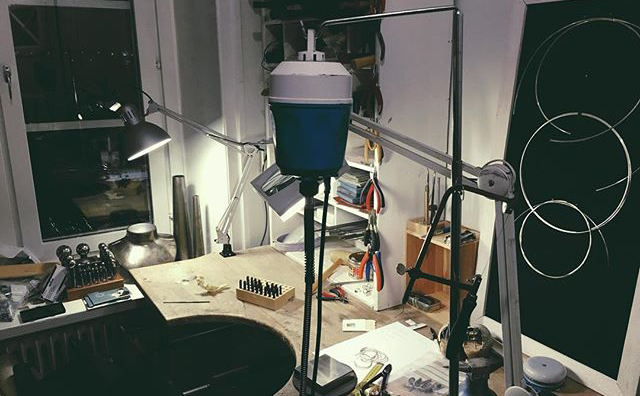
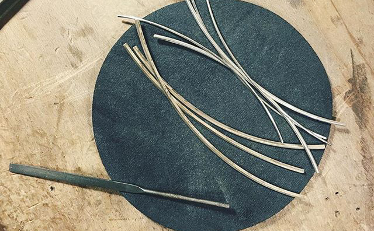

About Us...
Founded in 2014, we are two sisters born & raised in Sweden, continuing on a family tradition of silversmiths. Our pieces are bespoke, hand made and made to order and we include sizing, adjustments & customisation as part of your purchase. Simple but elegant pieces are what we specialise in, but we also offer consultation to see if we can help bring your ideas to life.
Our raw materials are sourced sustainably with the intention of doing as much as possible to be good to the earth. We buy direct from local merchants in Thailand, making sure they are receiving proper compensation. We also do not buy massively in bulk which means we often sell out quite quickly, we feel this not only gives an exclusive feel to our products but also allows for more realistic and sustainable material sourcing.
Our pieces are worn well known music artists but also everyday people & kids. We try to make the pieces as accessible as possible so a lot of what we make is unisex. We also often have special signature pieces available on short runs so make sure to keep an eye out on our collections.